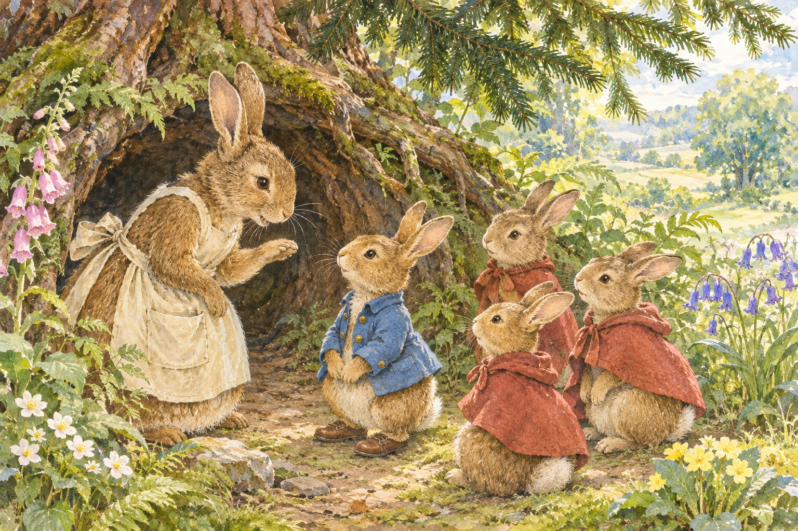
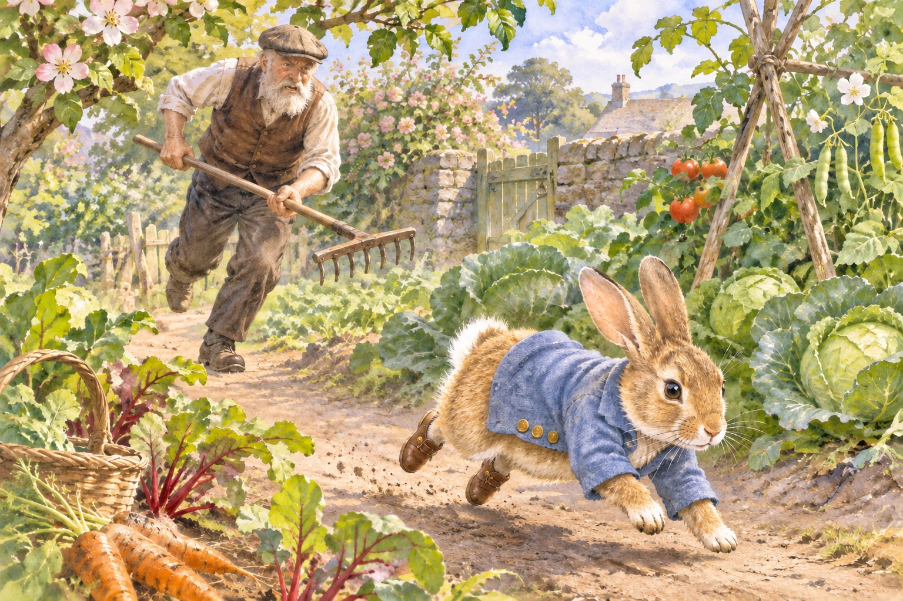
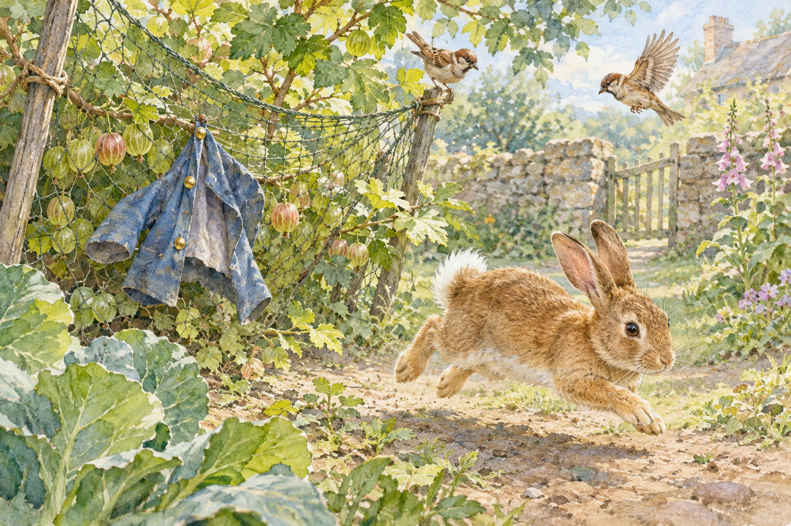
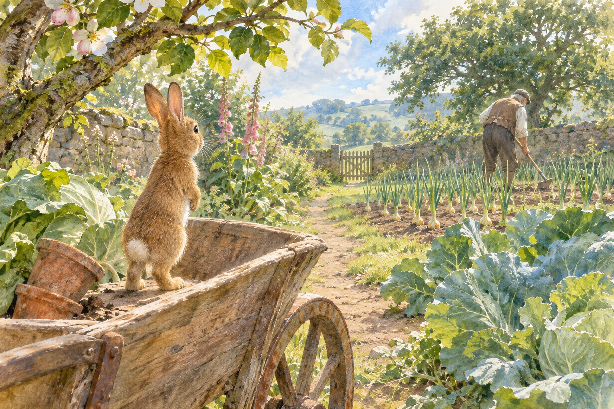
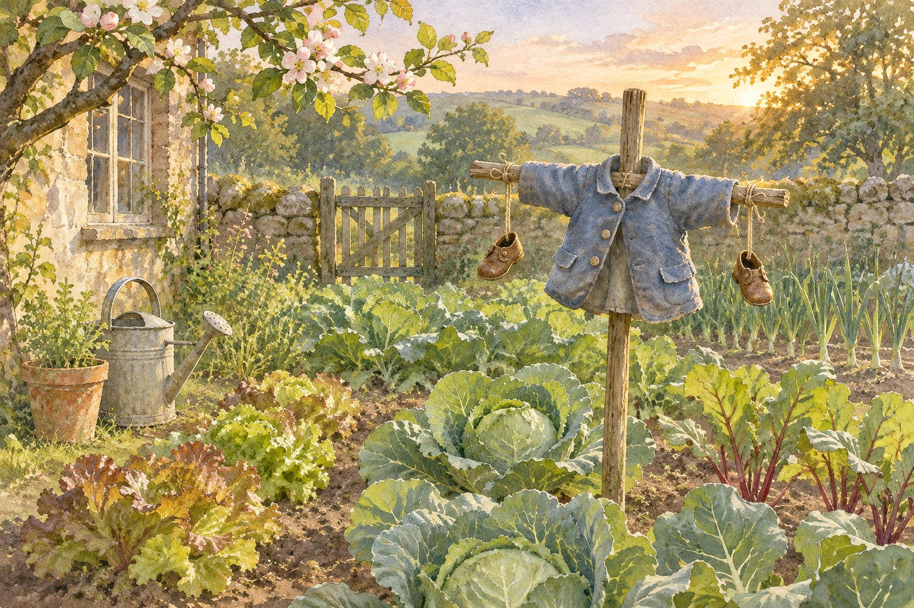
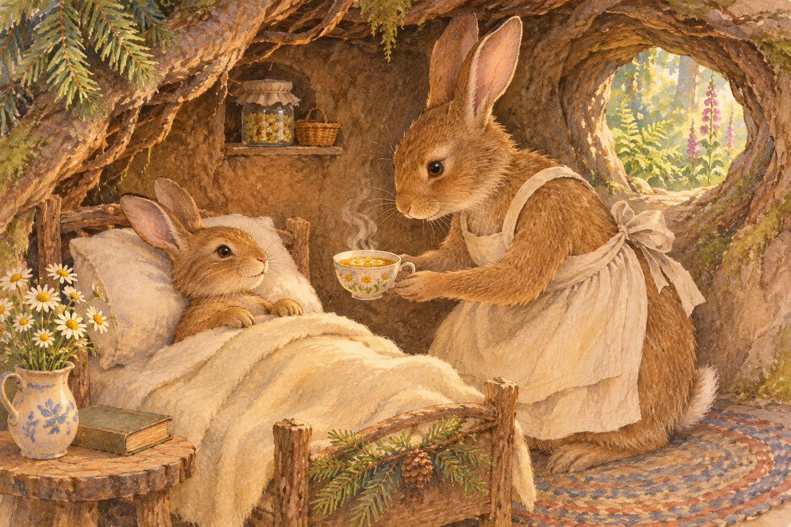
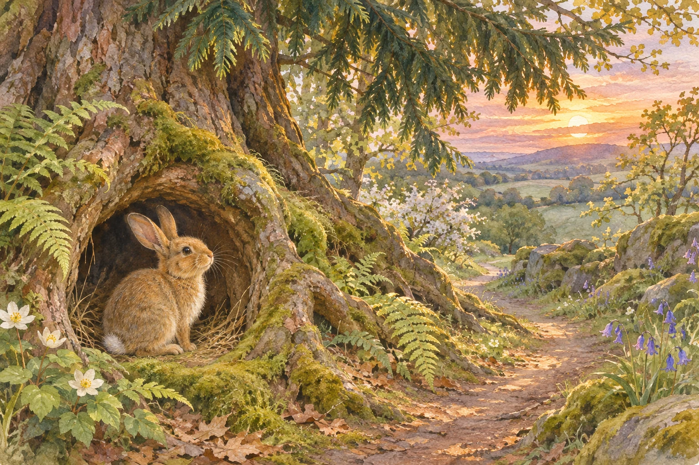
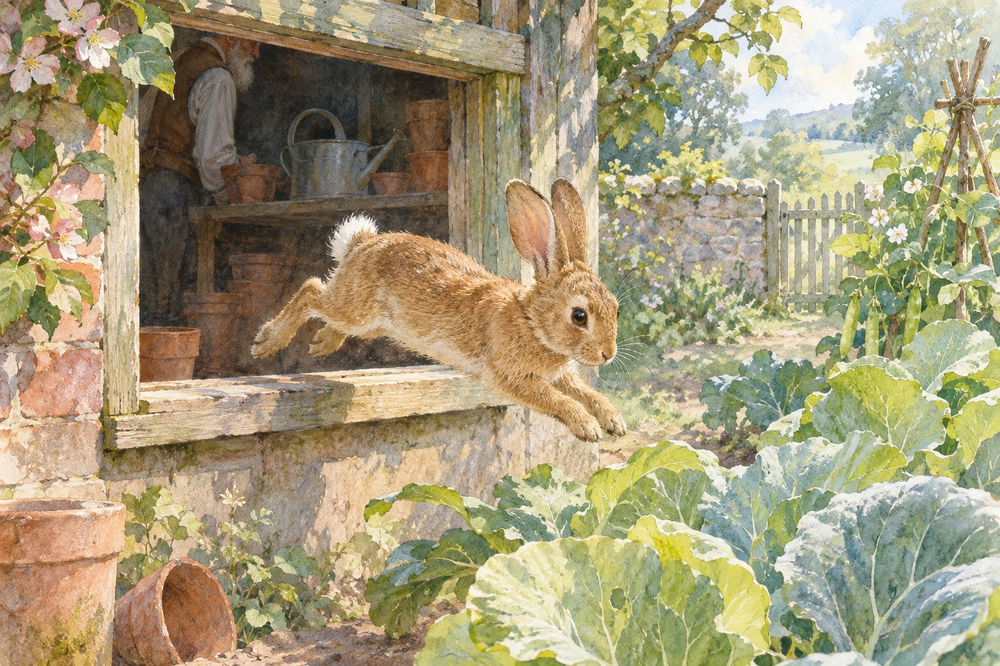

← 記事一覧へ戻る
知識の大図鑑｜非公開下書き・peter-rabbitピーターラビットのおはなし――小さな庭が、大きな冒険になる
画像付きの非公開確認稿です。本文と挿絵の独立点検済み。ブラウザでの実表示確認と公開承認は未完了です。
英語原典をもとに独自に紹介しています。挿絵は本記事のために制作した想像図です。
母親に止められた庭へ入ったピーターは、庭の野菜を食べたあとで持ち主に出くわし、逃げながら帰り道を探します。ビアトリクス・ポターのこの物語では、人間には身近な菜園が、小さなウサギには危険の多い場所へ変わります。何が起きたかとともに、ピーターの体の小ささがどのように物語を動かすかにも注目して読めます。
原題：The Tale of Peter Rabbit／作者：ビアトリクス・ポター。1901年に私家版、1902年にフレデリック・ウォーンによる商業版が刊行されました。
短いあらすじ
子ウサギのピーターは、母の注意を聞かずにマグレガーさんの庭へ入り、野菜を食べます。持ち主に見つかって逃げまわるうち、帰り口もわからなくなります。身近な道具や植物が、彼には大きな障害になります。
下の要約には結末が含まれます。
結末を含む要約を読む

庭へ入らないよう、母が注意します。母ウサギは、以前この庭で父ウサギが災難にあったことを話し、その庭に入らないよう子どもたちに言います。母がパン屋へ出かけると、三匹は木イチゴを摘みに行き、ピーターは門の下をくぐって庭へ入ります。

庭で見つかり、逃走が始まります。ピーターはレタスやサヤインゲン、ハツカダイコンを食べます。気分が悪くなってパセリを探す途中、キャベツの苗を植えていたマグレガーさんに出くわします。熊手を振って追いかけてくる相手から逃げるうち、帰り道を見失い、両方の靴をなくします。

上着を残し、網から抜け出します。四本足で速く走れるようになったものの、青い上着の大きなボタンが、スグリの実を守る網に引っかかります。スズメたちに励まされ、ピーターは上着を残して逃げます。道具小屋で水の入った缶に隠れますが、くしゃみで気づかれ、小窓から外へ飛び出します。

手押し車から、帰りの門が見えました。小屋を出ても、壁の扉には鍵がかかっています。池の白猫から離れたあと、ピーターは手押し車に登り、タマネギの手入れをするマグレガーさんの向こうに門を見つけます。茂みの裏を走って同じ門の下から森へ戻ります。マグレガーさんは残された上着と靴を畑の鳥よけにします。

残された服は、鳥よけに変わります。
家に帰り、母に世話をされます。家に着いたピーターは疲れきって横になります。夜も具合が悪く、母に寝かされてカモミールのお茶を飲みます。ほかの三匹の夕食は、パンとミルクと木イチゴです。
帰る場所の安心

冒険の終わりに、帰る場所があります。庭での逃走のあと、ピーターは家の柔らかい砂の上で目を閉じます。夜は母に寝かされ、お茶を飲みます。追われる緊張から、世話を受けて休める場所へ。物語の終わりでは、その変化にも目を向けられます。
主な人物
| 名前 | 物語での役割 |
|---|
| ピーター / Peter | 母の注意を聞かず庭へ入り、追われながら出口を探す子ウサギ。 |
| 母ウサギ / Mrs. Rabbit | 庭の危険を伝え、子どもたちにその庭へ入らないよう言う。 |
| マグレガーさん / Mr. McGregor | 菜園で野菜を育てる人物。庭へ入りこんだピーターを追う。 |
| フロプシー、モプシー、カトンテール / Flopsy, Mopsy, Cotton-tail | ピーターと暮らす三匹の子ウサギ。木イチゴを集めに出かける。 |
読み方の一例――同じ庭でも、体の大きさで見え方が変わる

小さな体だから通れる場所もあります。庭にある網、容器、窓、手押し車は、人間には普通の道具です。しかし、ピーターには体が引っかかる障害にも、隠れる場所にも、遠くを見る足場にもなります。小さな体が危険を大きくする一方、人間が通れないすき間を逃げ道に変えるところが、この物語のおもしろさです。
服にも注目できます。上着は人間のような子ウサギの姿をつくりますが、逃げる場面ではボタンが網に引っかかります。靴をなくすと四本足で速く走れることも書かれています。かわいらしい服装と、野生の動物としての体の動きが、追いかけっこの中で入れ替わると読めます。
作者について
ビアトリクス・ポター（1866–1943）は、文章と絵の両方を手がけたイギリスの作家です。動植物を細かく観察し、その動きを物語に生かしました。この作品の出発点は1893年に子どもへ送った絵手紙です。
まとめ
門のすき間や庭の道具は、小さなピーターにはどんな場所に見えるでしょうか。
本サイトが勧める理由：よく知られたウサギの物語を入口に、体の大きさと道具の役割、追う側と逃げる側の見え方を比べられるためです。
権利と採用資料
1902年公刊のポター本人による英語原作と当時の本人の原挿絵は、日本で保護期間終了確認済みです。1943年没に対する旧原則の死後50年と、英国の戦時加算3794日を考慮しても2018年の延長前に満了し、延長による復活はありません。相互主義は、本国の保護期間が日本より短い場合に、その短い期間を上限とする仕組みです。英国の通常期間は死後70年ですが、それにより日本で一度満了した権利が復活するわけではありません。これは今回の編集上の確認結果です。
| 対象 | 今回の状態・利用範囲 |
|---|
| 英語本文 | 保護期間終了確認済み。Gutenberg #14838を通読して独自に解説。既存日本語訳文は採用していません。 |
| 本人の原挿絵 | 原表現の期間は終了。本稿では原挿絵の画像ファイルは転載していません。 |
| 本記事の場面挿絵 | 英語原典に基づいて独自制作した8枚。画像は独立担当が点検済みです。 |
| 翻訳・現代の新装版や新しい絵 | 未確認。訳者・版・新たな創作部分は個別確認が必要。引用等の根拠なしの転載には許諾が必要です。 |
| 作者写真・映画・アニメ・音声 | 未確認。今回不採用。原作の期間終了だけで利用可能とはしていません。 |
| 商標・公式ロゴ | 日本の登録原簿は未確認。作品を説明する通常の文字表記のみ。公式・公認・提携の表示や商品化は行いません。 |
現在の公式サイトには素材使用の許諾窓口があり、その配布画像やロゴを原作と一括して自由利用とは扱いません。利用許諾の依頼は送信していません。
出典・原典を読む
Gutenbergページの自動生成された紹介文は根拠にせず、物語本文を照合しました。刊記には1902年初刊とありますが、電子化された物理底本の刷は未特定です。「1902年初版本原本を確認済み」とは表記しません。市販日本語版との全文同一性も未検証です。
← 記事一覧へ戻る